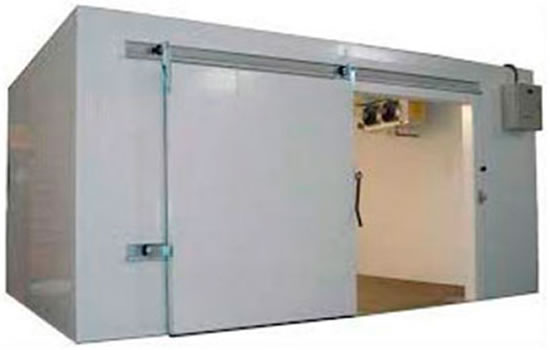

Câmara de resfriados
Conserva produtos que precisam permanecer refrigerados sem congelar. A manutenção verifica se a temperatura se mantém estável, com circulação de ar e vedação adequadas.
Manutenção preventiva e corretiva para câmaras de resfriados e congelados. Diagnóstico técnico para recuperar o desempenho, manter a temperatura estável e reduzir o risco de perdas.
A câmara fria é um compartimento isolado termicamente, desenvolvido para armazenar produtos com controle de temperatura. É utilizada em mercados, restaurantes, hotéis, frigoríficos e outros estabelecimentos que dependem de conservação contínua.
A Climátis avalia o sistema de refrigeração, o controle de temperatura e as condições de operação para orientar a manutenção conforme a necessidade de cada equipamento.

A temperatura de operação depende do produto armazenado e do projeto da câmara. O ajuste deve respeitar as especificações de conservação de cada produto.
Conserva produtos que precisam permanecer refrigerados sem congelar. A manutenção verifica se a temperatura se mantém estável, com circulação de ar e vedação adequadas.
Mantém produtos congelados nas condições previstas para armazenamento. O diagnóstico inclui o sistema de degelo, o isolamento e a capacidade de refrigeração para a carga utilizada.
A rotina é definida conforme o projeto, os componentes instalados, o uso e o estado do equipamento.
Uma fina camada de gelo pode se formar durante a operação e ser removida pelo degelo. Quando o acúmulo persiste, a passagem de ar diminui e o rendimento da câmara pode cair.
Evaporador sujo, ventiladores com falha ou produtos bloqueando a circulação de ar dificultam a troca de calor e favorecem a formação excessiva de gelo.
Portas abertas, gaxetas desgastadas e carga de produto acima da capacidade prevista aumentam a entrada de calor e umidade e prolongam o trabalho do compressor.
Falhas no ciclo de degelo ou no escoamento da água podem causar novo congelamento junto ao evaporador. A avaliação identifica a causa antes do reparo.
Informe se a câmara é de resfriados ou congelados, a temperatura de trabalho, o problema percebido e o bairro de atendimento.
Manutenção com garantia de 3 meses.